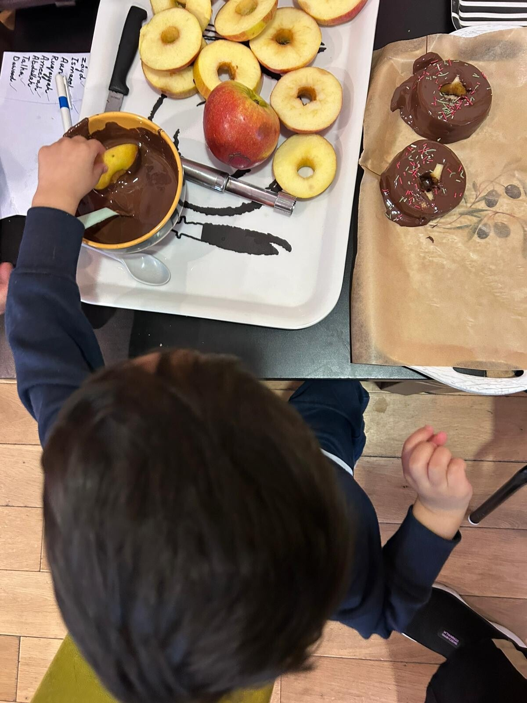

A Legacy of Independent Learning
For more than two decades, we have guided hundreds of children aged 24 months to 5 years through their foundational early years. Our team combines AMI/MCI accredited Montessori practitioners with deep pastoral warmth.
Every child is treated as an individual with boundless capability. Rather than instructing from above, our teachers observe and gently guide each child towards mastery at their own rhythm.


Our Dedicated Educators
All our staff are fully trained and qualified in early childhood care, holding certifications in Paediatric First Aid, Fire Marshal training, and Safeguarding.
We believe in establishing strong, trusting bonds with both children and parents, ensuring every child feels safe, loved, and excited to attend each morning.
Montessori Accredited
Fully accredited setting committed to authentic Maria Montessori principles, sensory materials, and mixed-age peer learning.
Dedicated Key Persons
Each child is paired with a devoted Key Person who monitors developmental milestones and partners closely with parents.
Community Roots
Conveniently situated on Addiscombe Grove, serving families across East Croydon, Addiscombe, and surrounding neighborhoods.